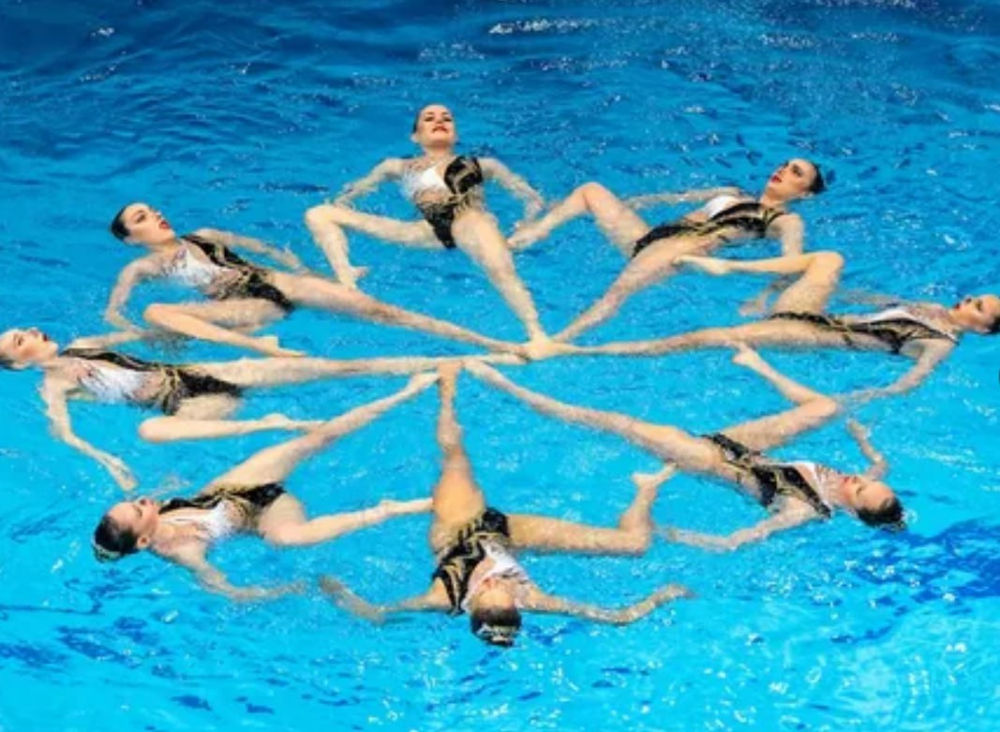
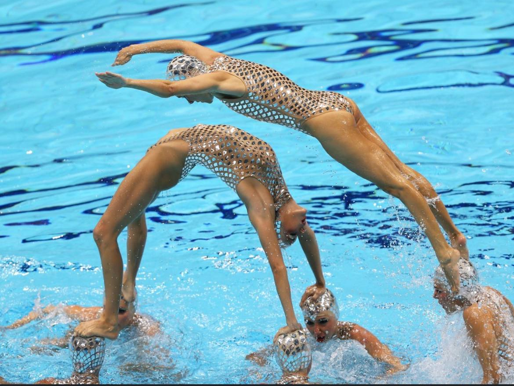
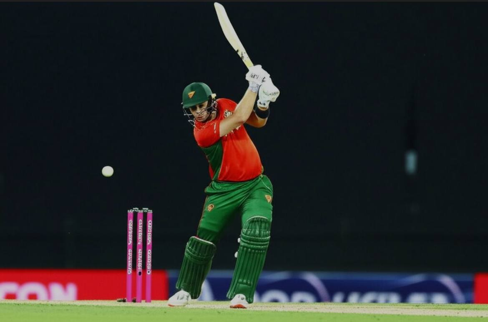
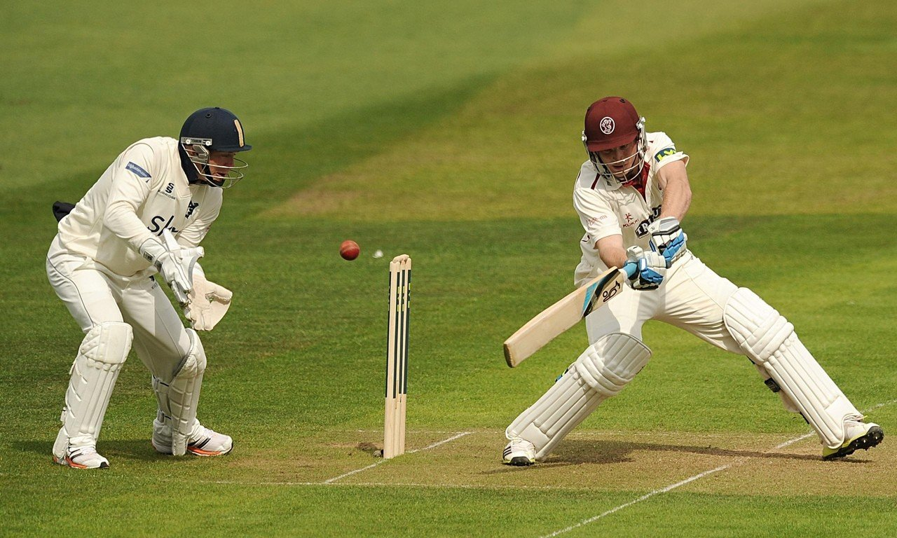
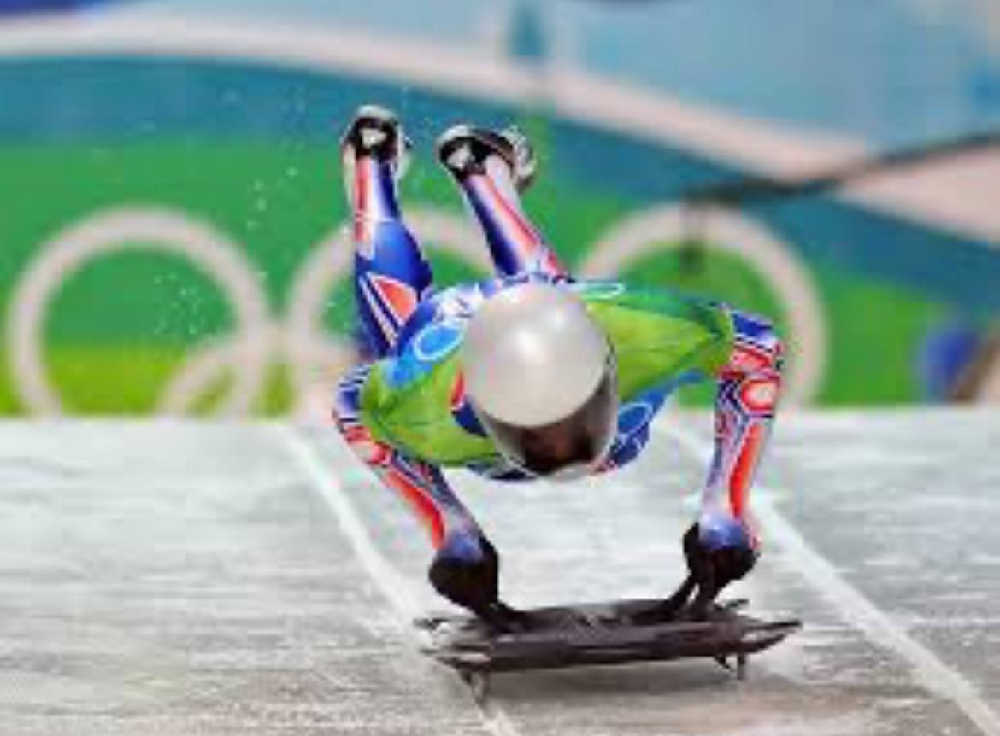
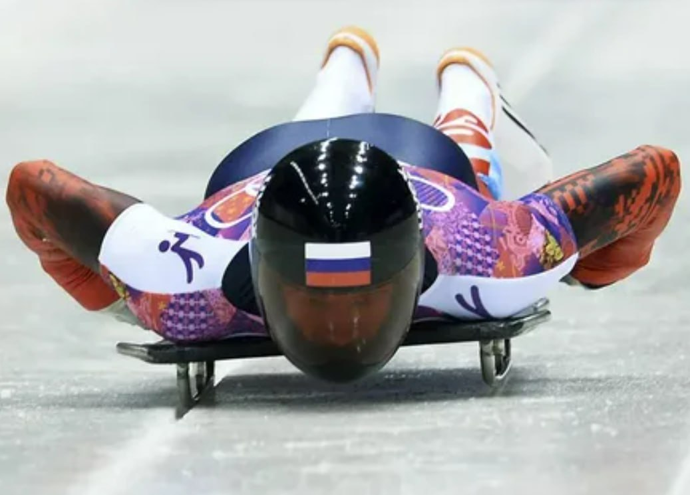

Виды спорта
-
Синхронное плавание:
Грациозное и сложное сочетание плавания, гимнастики и танца в воде. Команды (или солистки) выполняют синхронные движения под музыку, демонстрируя силу, гибкость и артистизм.
Ключевые навыки: Отличное владение телом, выносливость, гибкость, умение задерживать дыхание, синхронность, артистизм.
Почему интересен: Удивительное зрелище, сочетающее физическую силу и красоту. Требует невероятной концентрации и координации.


Крикет:
Командная игра с битой и мячом на овальном поле. Одна команда отбивает мяч, пытаясь заработать очки (раны), а другая команда пытается вывести отбивающих из игры.
Ключевые навыки: Отличная реакция, умение метать и отбивать мяч, стратегическое мышление, командная работа.
Почему интересен: Стратегически сложная игра с множеством нюансов. Популярен во многих странах мира (особенно в Индии, Австралии, Англии). Матчи могут длиться несколько дней.


-
Скелетон:
Скоростной спуск по ледяному жёлобу на специальных санях (скелетоне). Спортсмен лежит лицом вниз на санях и управляет ими, перенося вес тела.
Ключевые навыки: Отличная реакция, умение контролировать сани на высоких скоростях, смелость, баланс.
Почему интересен: Экстремальный и захватывающий вид спорта. Требует от спортсмена огромного мужества и мастерства. Развивает огромную скорость на трассе.

